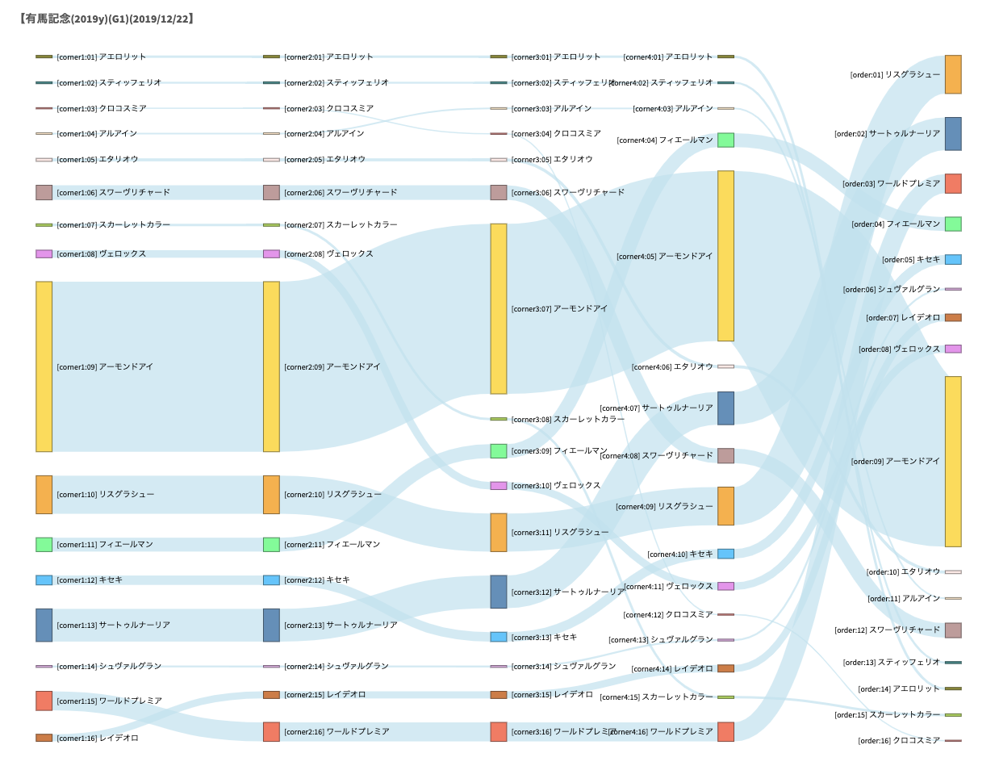
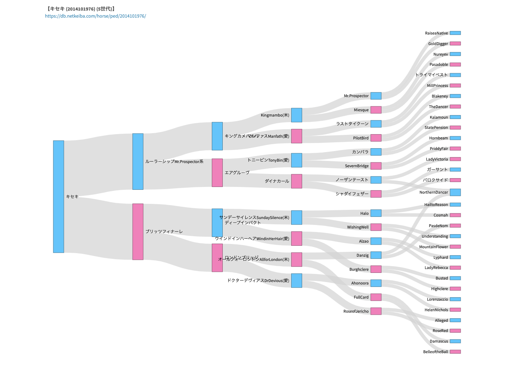
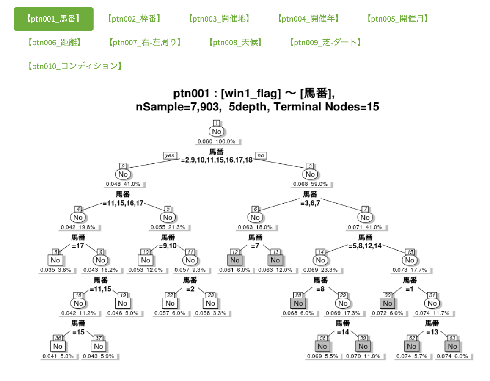
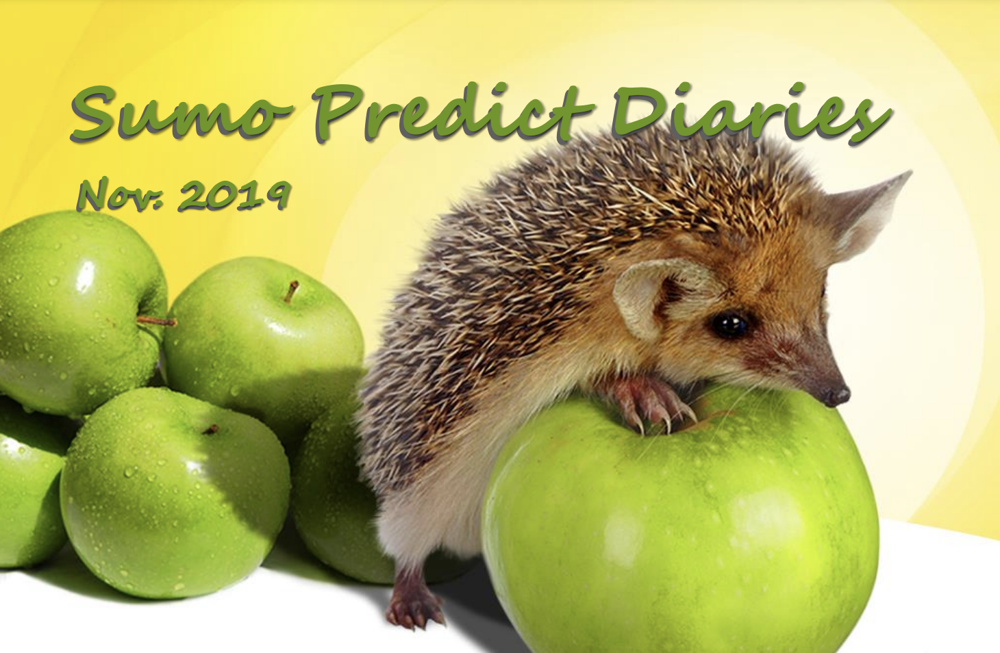
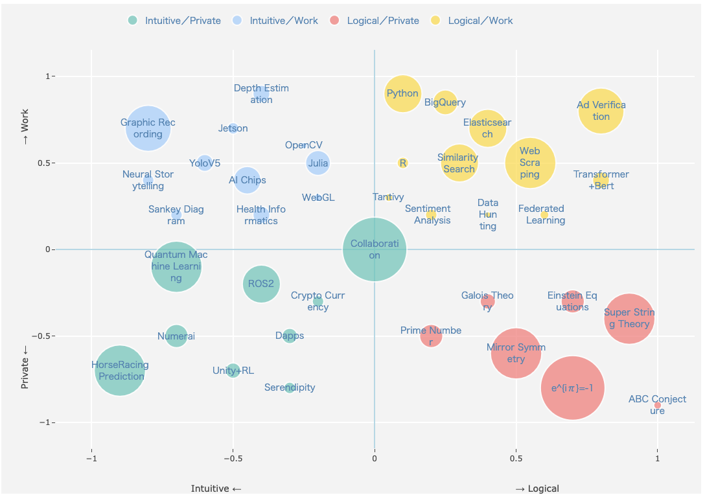

Background
競馬予測の前提
競馬について全く知識がない中で競馬予測を始めた当初の記録です。競馬は毎週開催されることもあり、データ分析との親和性が高く、継続的に取り組めるのでお勧めです。スクレイピングと可視化を用いて事前情報を効率的にインプットして競馬を楽しく観戦できます。
独自の競馬予想AIによる予想レポートをビジュアルも交えて無償公開しています。競馬予想を手軽に楽しむための情報を提供しています。
競馬について全く知識がない中で競馬予測を始めた当初の記録です。競馬は毎週開催されることもあり、データ分析との親和性が高く、継続的に取り組めるのでお勧めです。スクレイピングと可視化を用いて事前情報を効率的にインプットして競馬を楽しく観戦できます。


競馬を観戦する上で血統は重要な要素の一つです。Sankey Diagramを用いて血統 (最大5世代) を可視化することで交配のクロス状況が確認しやすくなります。

長期間データを用いた傾向分析結果を紹介しています。全体を俯瞰する基礎分析が重要であることを改めて感じます。

相撲の取組予測は、一見「勝ち負け」の二択という単純なものにみえますが、実は非常に奥が深いです。取組当日の勝者力士を予想し、結びの一番が終わる18時に答え合わせ（バックテスト）を行います。初日から千秋楽の15日間連続して楽しめるのも相撲予測を行う醍醐味といえます。このプロセスを通じて、一人でも多くの方が相撲という競技に興味を持ち、その深い魅力を知るきっかけになれば嬉しいです。

直感的な気付きやStory Tellingに繋がるような可視化の手法や適用事例を探して紹介しています。個人的には、Sankey Diagramがお勧めで様々なケースで利用しています。